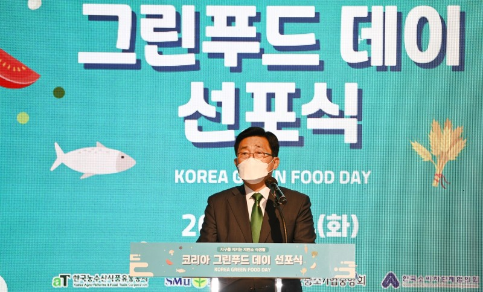
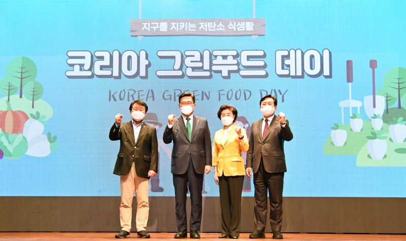
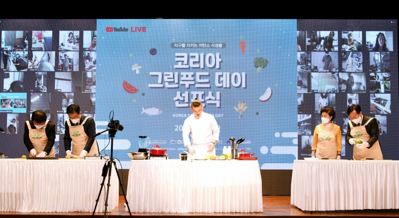

한국농수산식품유통공사(사장 김춘진)는 14일 서울 aT센터에서 생산자·소비자·기업 대표와 함께 저탄소 식생활 문화 확산을 위한 ‘코리아 그린푸드 데이’ 캠페인 선포식을 온·오프라인으로 개최했다.
‘코리아 그린푸드 데이’는 우리 모두와 미래세대를 위해 먹거리의 생산-유통-소비 전 과정에서 발생하는 온실가스 배출량을 줄이는 대국민 식생활 개선 캠페인이다.
공사는 가정, 음식점, 급식소 등에서 자율적으로 지정한 ‘코리아 그린푸드 데이’에 ▲생산은 탄소를 줄이는 ‘저탄소·친환경 인증농산물’ ▲유통과정에서 탄소배출을 줄이는 ‘로컬푸드’로 식단 구성 ▲소비단계에서는 ‘잔반 없는 식사’로 폐기물을 줄여 먹거리에서 발생하는 온실가스 배출량을 최소화하는 실천방안을 제시했다.
이날 선포식은 공사와 ESG경영 실천을 약속한 새마을운동중앙회(회장 염홍철), 중소기업중앙회(회장 김기문), 한국소비자단체협의회(회장 원영희)에서 참석하여 68만 단체와 486만 회원을 대표해 저탄소 식생활의 실천을 다짐하며 대국민 캠페인의 시작을 알렸다.
이어서 유명 요리사 유현수(두레유 레스토랑)의 온라인 요리 교실을 통해 음식물 쓰레기를 줄이는 요리법을 강의하고, 저탄소‧친환경 농산물 구매 인증 행사 등 참여형 온라인 프로그램을 마련하여 온라인 참석자들의 관심을 끌었다.
한편, 공사는 국민 먹거리를 책임지는 공공기관의 특성을 살린 ESG경영 실천방안으로 지난 7월부터 매월 마지막 주 목요일을 코리아 그린푸드 데이로 지정, 본사 구내식당에서 200명 점심식사 1끼를 통해 약 148kg의 탄소 줄이기를 실천해 오고 있다.
공사는 이번 선포식을 시작으로 지자체, 교육청, 공공기관 등 단체급식 기관과 협력하여 코리아 그린푸드 데이를 범국민 캠페인으로 확산시킬 계획이다.
한국농수산식품유통공사 김춘진 사장은 “탄소중립을 향한 과감한 혁신 없이는 지속 가능한 먹거리도, 인류의 미래도 장담할 수 없는 상황”이라며, “하나뿐인 지구를 지키기 위해 가정, 음식점, 급식소 등에서도 동참하도록 코리아 그린푸드 데이 캠페인을 대대적으로 추진하겠다”고 말했다.